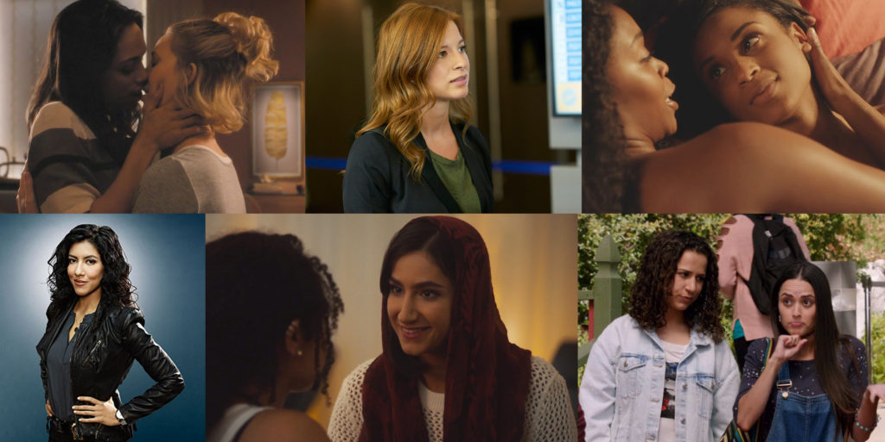

One actor playing different characters with different roles on a single show.
Orphan Black
Soap Operas
Multiple actors playing the same character.
All My Children
Determine which actor primarily represents the character
The Biggest Code Challenge of Them all
Sara Fuck*ing Lance
Sara Lance
Has died and come back to life 3 major times
Sara Lance
Has been played by 2 different actors
Sara Lance
Has been on four different shows with different roles
Legends of Tomorrow - Main
Arrow - Recurring
Supergirl - Guest
The Flash - Guest
Sara Lance
Make Data Better
In 2017 We Added
Actors
?????
Didn't the site already have actors?
Actors
Post Type or a Taxonomy?
New Post Type: Actors
Metadata
Actor Name
Gender Identity
Sexual Orientation
Birth and death dates
Social accounts
IMdB and Wikipedia links
Text Field Actor Post Type
I Am Sorry
Actor Policy
When in doubt, don’t out.
Make Data Useful
As of this morning
3018 Characters
994 Shows
Find shows you want to watch
Find characters you can relate to
Reward Good
Shows We
Shows We
Both Mika and I have to agree
High quality and positive queer representation
Plenty of screentime
No shock-value death
Stars
Stars
A star system to rank the queerness level of a show.
Gold
Openly queer creators, majority queer characters, out queer actors and stories made for a queer female audience.
Examples: The L Word, Take My Wife and Pose.
Silver
Openly queer creators, queer characters and stories made for a queer female audience, but may have no out queer actors or also has a significant number of stories geared towards a non-queer female audience.
Examples: Queer As Folk, Steven Universe and RED.
Bronze
Openly queer creators, some queer characters and stories, made for a general audience. Also used for shows focused on a queer main character and their stories, but has no out queers involved with production or acting.
Examples: Sense8, American Horror Story and Janet King.
Intersectionality

Intersectionality
The concept that oppressive institutions (racism, sexism, homophobia, transphobia, ableism, xenophobia, classism, etc.) are interconnected and cannot be examined separately from one another.
Jane the Virgin
Show Scores
Show Scores
A mathematical method of a generating a numeric score for TV shows from 0 to 100 to help identify shows that are ‘better’ for queer audiences than others.
Show Scores
Each of these sections can earn up to 100 points
Ratings
Character Survival Rate
Character Clichés
Show Tropes
The scores are added together and divided by 4 to generate the overall score.
Ratings
Ratings - 1 to 5 points each
Realness
Quality
Screentime
Sum is multiplied by 3 for a max of 30 points
Ratings
Worth Watching?
Thumbs up +10
Thumbs ‘meh’ +5
Thumbs down -10
Ratings
Star Ratings
Gold Star +20
Silver Star +10
Bronze Star +5
Ratings
Trigger Warnings
Low -5
Medium -10
High -15
Ratings
Show We Love
= 40 points
Character Survival Rate
The percentage of queer characters who are alive.
Everyone alive = 100 points, everyone dead = 0 points
Character Clichés
The percentage of characters with no clichés (except ‘Queer In Real Life’)
No clichés = 100 points, clichés for everyone = 0 points
Show Tropes
None
Good: Happy Ending, Everyone’s Queer
Maybe: Coming Out, Big Queer Wedding
Ploy: Erased Queerness, Happiness then Tragedy, Subtext Only, Queer For Ratings, Queer for Laughs
Bad: Big Bad Queers, Prison, Queerbaiting, Queerbashing
Regular: Everything else
Show Tropes - Points
Five main formulas.
None = 100
All Good = 95
All Good + Maybe = 85
More Bad than Good = 40
All Bad + Ploys = 25
Show Tropes - Points
Everything Else
Good + Maybe - Bad ÷ Number of tropes
No ploy tropes + 50 bonus points.
Show Tropes - Points
Bury Your Queers
Lose 1/3 of your trope score.
Bonus Points!
Intersectionality
+3 bonus points for each, up to a max of 15.
Statistics
Sexual Orientation
Gender Orientation
Actor Orientation
Stations
Countries
Death
The State of Representation
US Network TV
As of May 2018
Sexual Orientation Representation
Gender Orientation Representation
Analysis Results
Best On-Air Score: The CW 36.66 (CBS 35.4 is second )
Best Overall Score: ABC 33.96 (The CW 33.28 is second)
Most Shows On-Air: FOX 16 (ABC 15 is right behind )
Most Shows Total: ABC 69 (NBC 64 is catching up)
Overall
Scores and total shows on-air are going up.
Is It Getting Better?
Shows by Year
Turnover
US Television
Blue line = Gains, Orange Line = Losses
The Future of Representation
Black Lightening
First black lesbian superhero main character.
Steven Universe
First same sex female proposal and wedding on a children's show.
Vida
A show featuring Latinx queer women, created, written and produced by Latinx queer women.
Pose
A show about transgender women of color with the highest number of out transgender and queer actors, writers and producers.
Supergirl
First transgender superhero. The role will be played by out transgender actress Nicole Maines.
Bat Woman
The first titular superhero main character to helm a show, and be openly queer from day one as character and actor.